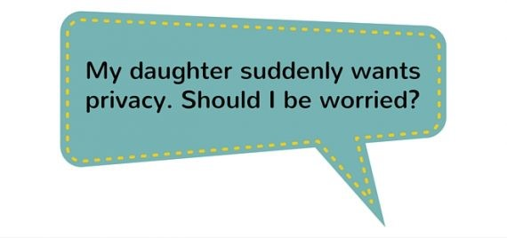
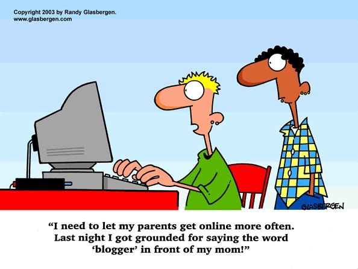
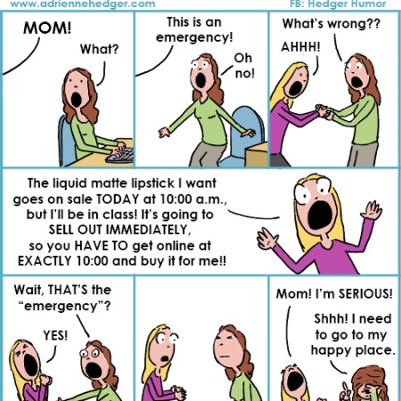
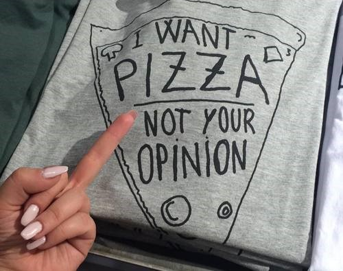

1/17
2/17
We generally think about our future life and even make serious plans about it. Yes, we are not kids anymore
3/17
This is when we start dreaming. Innocent to know even if they are even practical. That is why our dreams have no limitations. Our dreams are filled with hope.
4/17
We do realize that friends are important in life. We can share with them things that can’t be leaked out to parents and family. We will do anything for our friends.
5/17
We feel so grown up. Life is getting shorter (We entered teenage right :\ ). We love to adventure. Trips make our life interesting. We are fresh, strong and curious.
6/17

At times we need privacy. We would love if our parents respect that. We don’t want to be judged. We want somebody who can understand us(though it is tough to understand teenagers).
7/17
8/17

Will you never understand us? :\
9/17
This is because , we are influenced by our friends. We don’t want to be left out in this world of fashion. Yeah, we were clueless when we used to be kids but do understand, we aren’t kids anymore.
10/17
This is the age where we will come to understand things about sex. It is quite a shock for us to take in, so it would be really nice if somebody guides us , regarding sex education. We read romance novels too, I always wanted to read them but it is only now that I started understanding them.
11/17
Gadgets fascinate us. We don’t even know when we were addicted , but I am obsessed with them now.
12/17

We would love to drive bikes, cars. Maybe, we also want to try out wine, for fun. We are waiting to cast our vote. You know why we are desperate to do things though we have no idea how they will be, it’s just because we are restricted.
13/17

This is all new for us. We wanted to be that one popular girl in school. So yea, social media is how we do it.
14/17

Food makes me happy. But we aren’t much concerned about health, are we?
15/17
Now that we grew up. Most of thing on TV started making sense. Wonder how I actually understood all that complicated movies. LOL.
16/17

17/17
13 / 13